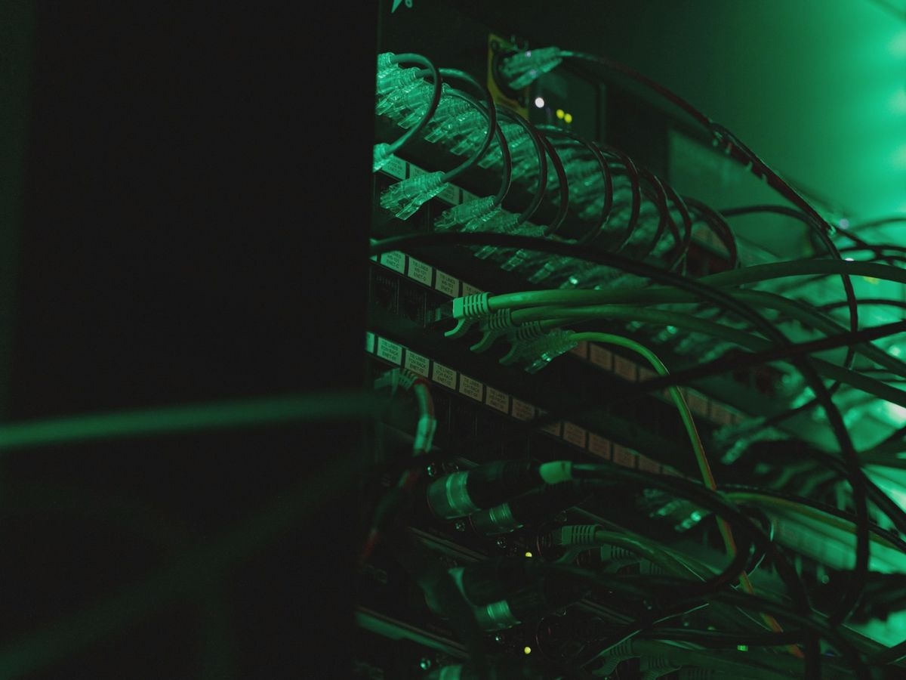

Netwerken
Project 1 – Netwerk opzetten
In dit project bouwde ik een klein netwerk op en configureerde ik de apparaten zodat ze met elkaar konden communiceren. Zo leerde ik hoe de theorie over netwerken in de praktijk werkt.

Doel
Het doel was een werkend netwerk opzetten waarin meerdere toestellen elkaar kunnen bereiken. Ik wilde begrijpen hoe IP-adressen, switches en een router samenwerken, en hoe je een netwerk overzichtelijk en veilig inricht.
Aanpak
Ik begon met een schema van het netwerk en koos de IP-adressen. Daarna sloot ik de apparaten aan en stelde ik ze één voor één in. Na elke stap testte ik de verbinding, onder andere met ping, en noteerde ik wat ik had aangepast.
Problemen en oplossingen
Een toestel kreeg in het begin geen verbinding door een fout in het IP-adres. Door de instellingen stap voor stap na te lopen vond ik de oorzaak. Sindsdien controleer ik eerst de basis voordat ik verder zoek.
Gebruikte technologieën
- Netwerken
- Routers
- Switches
- IP-adressering